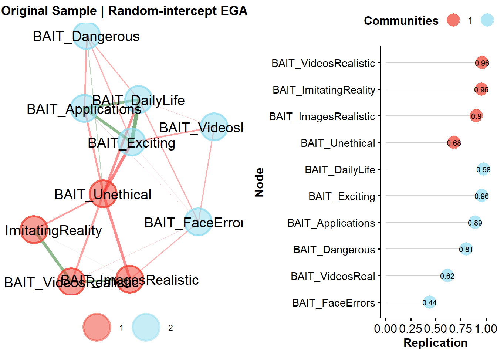
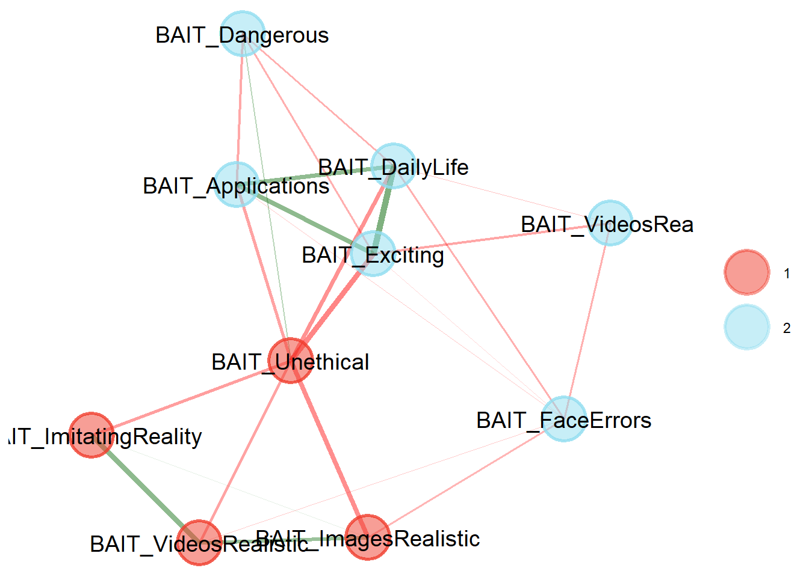
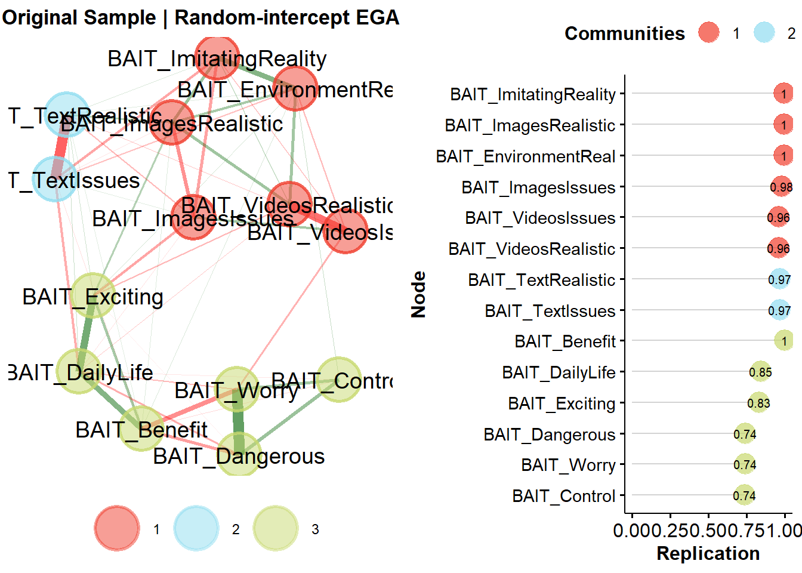
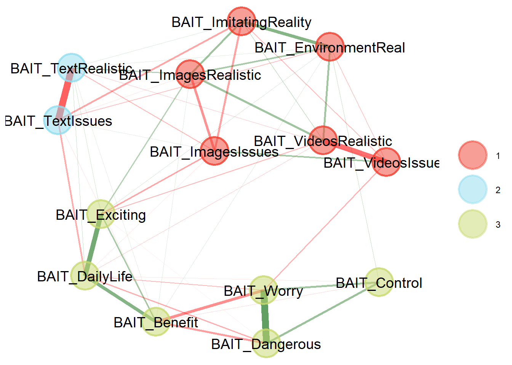
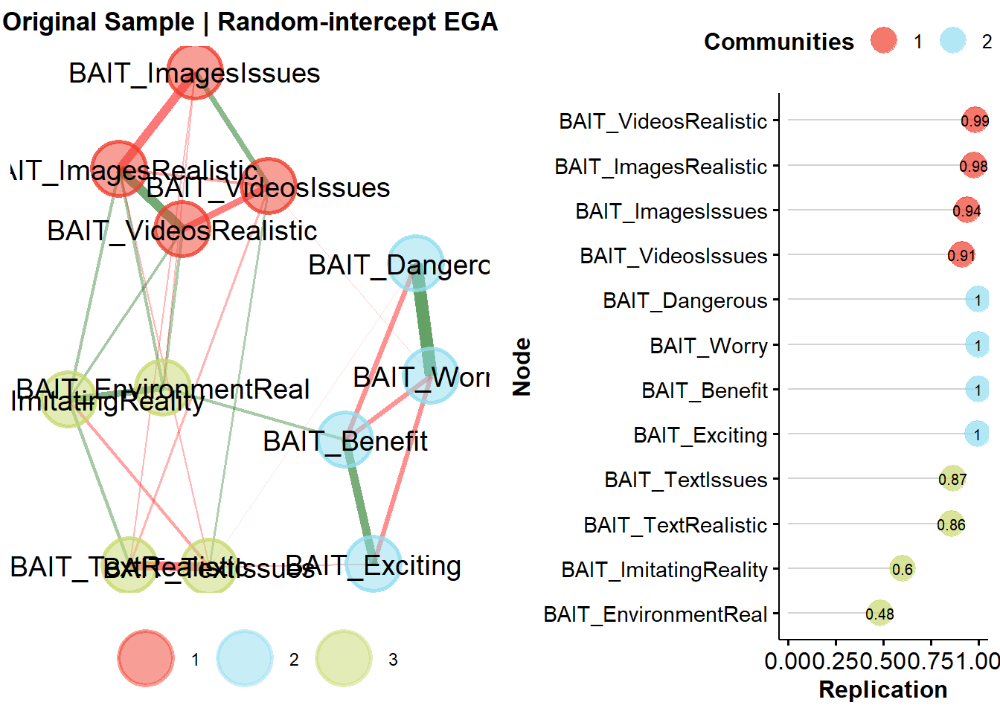
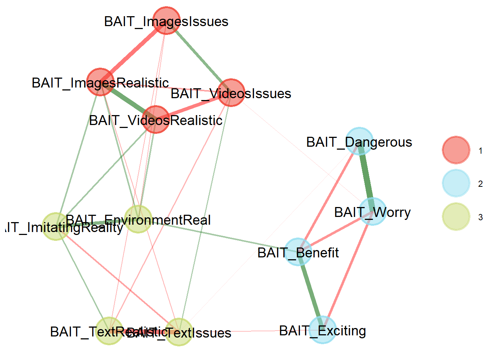
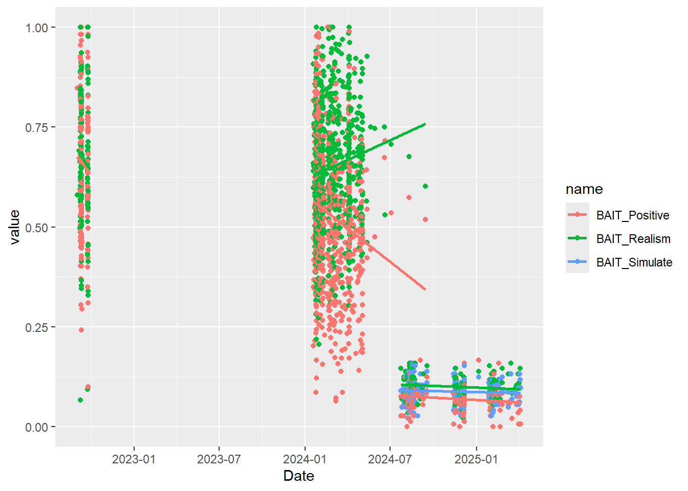
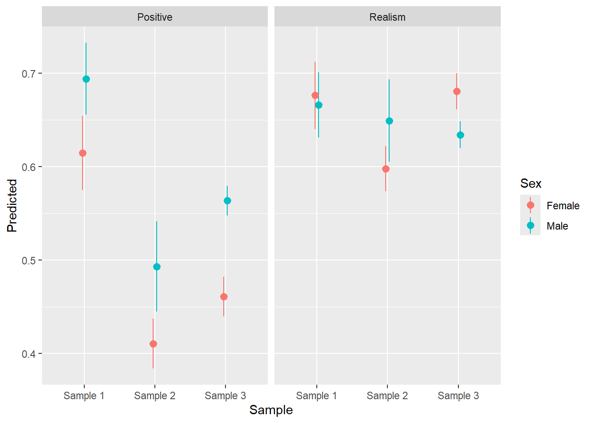
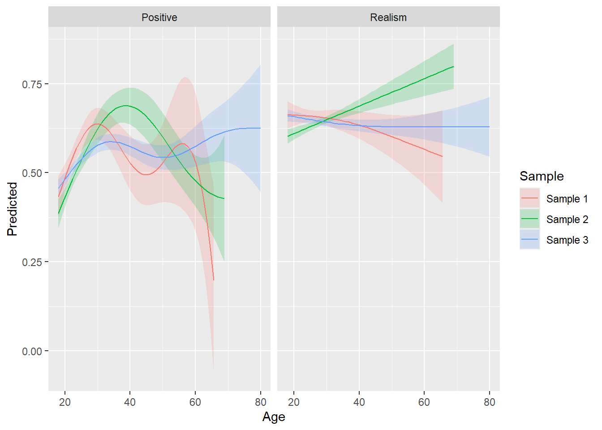

Code
library(tidyverse)
library(easystats)
library(patchwork)
library(ggside)
library(ggdist)library(tidyverse)
library(easystats)
library(patchwork)
library(ggside)
library(ggdist)df1 <- read.csv("https://raw.githubusercontent.com/RealityBending/FakeFace/refs/heads/main/data/data.csv") |>
select(Participant, Age, Sex, Date, starts_with("AI_")) |>
rename(
# I think current Artificial Intelligence algorithms can generate very realistic images
BAIT_ImagesRealistic = AI_1_RealisticImages,
# Organisations use Artificial Intelligence unethically
BAIT_Unethical = AI_2_Unethical,
# I think videos generated by Artificial Intelligence are impossible to distinguish from real videos
BAIT_VideosReal = AI_3_VideosReal,
# I am interested in using artificially intelligent systems in my daily life
BAIT_DailyLife = AI_4_DailyLife,
# I think Computer-Generated Imagery (CGI) software is capable of perfectly imitating reality
BAIT_ImitatingReality = AI_5_ImitatingReality,
# I think Artificial Intelligence is dangerous
BAIT_Dangerous = AI_6_Dangerous,
# I think current Artificial Intelligence algorithms can generate very realistic videos
BAIT_VideosRealistic = AI_7_RealisticVideos,
# Artificial Intelligence is exciting
BAIT_Exciting = AI_8_Exciting,
# There are many beneficial applications of Artificial Intelligence
BAIT_Applications = AI_9_Applications,
# Images of faces or people generated by Artificial Intelligence will contain errors
BAIT_FaceErrors = AI_10_FaceErrors
)
df1 <- df1[!duplicated(df1), ]
row.names(df1) <- NULLdf2 <- read.csv("https://raw.githubusercontent.com/RealityBending/FakeFace2/refs/heads/main/data/data_participants.csv") |>
select(Participant, Age, Sex=Gender, Date, starts_with("BAIT_"), -ends_with("Duration")) |>
rename(
# Current AI algorithms can generate very realistic images
BAIT_ImagesRealistic = BAIT_1_ImagesRealistic,
# Images of faces or people generated by AI always contain errors and artifacts
BAIT_ImagesIssues = BAIT_2_ImagesIssues,
# Videos generated by AI have obvious problems that make them easy to spot as fake
BAIT_VideosIssues = BAIT_3_VideosRealistic, # NOTE: WRONG LABEL IN DATA
# Current AI algorithms can generate very realistic videos
BAIT_VideosRealistic = BAIT_4_VideosIssues,
# Computer-Generated Images (CGI) are capable of perfectly imitating reality
BAIT_ImitatingReality = BAIT_5_ImitatingReality,
# Technology allows the creation of environments that seem just as real as reality
BAIT_EnvironmentReal = BAIT_6_EnvironmentReal,
# AI assistants can write texts that are indistinguishable from those written by humans
BAIT_TextRealistic = BAIT_7_TextRealistic,
# Documents and paragraphs written by AI usually read differently compared to Human productions
BAIT_TextIssues = BAIT_8_TextIssues,
# AI is dangerous
BAIT_Dangerous = BAIT_9_NegativeAttitutes,
# I am worried about future uses of AI
BAIT_Worry = BAIT_10_NegativeAttitutes,
# AI is exciting
BAIT_Exciting = BAIT_11_PositiveAttitutes,
# Much of society will benefit from a future full of AI
BAIT_Benefit = BAIT_12_PositiveAttitutes,
# How knowledgeable do you consider yourself about Artificial Intelligence (AI) technology?
BAIT_Expertise = BAIT_AI_Knowledge
)df3 <- read.csv("https://raw.githubusercontent.com/RealityBending/FictionEro/refs/heads/main/study1/data/data_participants.csv") |>
select(Participant, Age, Sex, Date, starts_with("BAIT_"), starts_with("GAAIS_"), -ends_with("Duration"),
-BAIT_Text, -BAIT_Visual, -BAIT_Videos) |>
rename(
# Artificial Intelligence might take control of people
BAIT_Control = GAAIS_Negative_9,
# Artificial Intelligence is dangerous
BAIT_Dangerous = GAAIS_Negative_10,
# I am worried about future uses of Artificial Intelligence
BAIT_Worry = GAAIS_Negative_15,
# I am interested in using artificially intelligent systems in my daily life
BAIT_DailyLife = GAAIS_Positive_7,
# Artificial Intelligence is exciting
BAIT_Exciting = GAAIS_Positive_12,
# Much of society will benefit from a future full of Artificial Intelligence
BAIT_Benefit = GAAIS_Positive_17,
# Current Artificial Intelligence algorithms can generate very realistic images
BAIT_ImagesRealistic = BAIT_1_ImagesRealistic,
# Images of faces or people generated by Artificial Intelligence always contain errors and artifacts
BAIT_ImagesIssues = BAIT_2_ImagesIssues,
# Videos generated by Artificial Intelligence have obvious problems that make them easy to spot as fake
BAIT_VideosIssues = BAIT_3_VideosRealistic, # NOTE: WRONG LABEL IN DATA
# Current Artificial Intelligence algorithms can generate very realistic videos
BAIT_VideosRealistic = BAIT_4_VideosIssues,
# Computer-Generated Images (CGI) are capable of perfectly imitating reality
BAIT_ImitatingReality = BAIT_5_ImitatingReality,
# Technology allows the creation of environments that seem just as real as reality
BAIT_EnvironmentReal = BAIT_6_EnvironmentReal,
# Artificial Intelligence assistants can write texts that are indistinguishable from those written by humans
BAIT_TextRealistic = BAIT_7_TextRealistic,
# Documents and paragraphs written by Artificial Intelligence usually read differently compared to Human productions
BAIT_TextIssues = BAIT_8_TextIssues
)# EGAnet::itemDiagnostics(select(df1, starts_with("BAIT")), seed = 1)uva <- EGAnet::UVA(data = select(df1, starts_with("BAIT")), cut.off = 0.4)
uvaVariable pairs with wTO > 0.30 (large-to-very large redundancy)
node_i node_j wto
BAIT_DailyLife BAIT_Exciting 0.343
BAIT_Exciting BAIT_Applications 0.327
BAIT_DailyLife BAIT_Applications 0.313
----
Variable pairs with wTO > 0.25 (moderate-to-large redundancy)
node_i node_j wto
BAIT_Unethical BAIT_Dangerous 0.277
BAIT_ImitatingReality BAIT_VideosRealistic 0.272
BAIT_ImagesRealistic BAIT_VideosRealistic 0.251
----
Variable pairs with wTO > 0.20 (small-to-moderate redundancy)uva$keep_removeNULLega1 <- EGAnet::bootEGA(
data = select(df1, starts_with("BAIT")),
seed=123,
model="glasso",
algorithm="leiden",
EGA.type="riEGA",
type="resampling",
plot.typicalStructure=FALSE,
verbose=FALSE)Warning: {EGAnet} uses "modularity" as the default objective function in the
Leiden algorithm. In contrast, {igraph} uses "CPM". Set `objective_function =
"CPM"` to use the Constant Potts Model in {EGAnet}The random-intercept model converged. Wording effects likely. Results are only valid if data are [4;munrecoded[0m.
plot(ega1$EGA)
make_table <- function(ega) {
EGAnet::net.loads(ega$EGA)$std |>
as.data.frame() |>
rownames_as_column("Item") |>
gt::gt() |>
gt::data_color(
method = "numeric",
palette = c("red", "white", "green"),
domain = c(-1, 1)
) |>
gt::fmt_number(decimals = 2)
}
make_table(ega1)The default 'loading.method' has changed to "revised" in {EGAnet} version >= 2.0.7.
For the previous default (version <= 2.0.6), use `loading.method = "original"`| Item | 1 | 2 |
|---|---|---|
| BAIT_VideosRealistic | 0.41 | 0.02 |
| BAIT_ImagesRealistic | 0.31 | 0.05 |
| BAIT_ImitatingReality | 0.30 | 0.00 |
| BAIT_Unethical | −0.40 | −0.38 |
| BAIT_Exciting | 0.15 | 0.52 |
| BAIT_DailyLife | 0.12 | 0.51 |
| BAIT_Applications | 0.08 | 0.40 |
| BAIT_FaceErrors | −0.07 | −0.05 |
| BAIT_VideosReal | 0.00 | −0.05 |
| BAIT_Dangerous | −0.04 | −0.22 |
features1 <- data.frame(
Participant = df1$Participant,
Sample = "Sample 1"
)
features1$BAIT_Realism <- rowMeans(df1[c("BAIT_VideosRealistic", "BAIT_ImagesRealistic", "BAIT_ImitatingReality")])
features1$BAIT_Positive <- df1 |>
datawizard::reverse_scale(select = c("BAIT_Dangerous")) |>
datawizard::data_select(select = c("BAIT_Exciting", "BAIT_DailyLife", "BAIT_Applications", "BAIT_Dangerous")) |>
rowMeans()uva <- EGAnet::UVA(data = select(df3, starts_with("BAIT")), cut.off = 0.4)
uvaVariable pairs with wTO > 0.30 (large-to-very large redundancy)
node_i node_j wto
BAIT_Dangerous BAIT_Worry 0.389
----
Variable pairs with wTO > 0.25 (moderate-to-large redundancy)
node_i node_j wto
BAIT_TextRealistic BAIT_TextIssues 0.290
BAIT_DailyLife BAIT_Exciting 0.254
----
Variable pairs with wTO > 0.20 (small-to-moderate redundancy)
node_i node_j wto
BAIT_DailyLife BAIT_Benefit 0.227
BAIT_VideosIssues BAIT_VideosRealistic 0.206uva$keep_removeNULLega3 <- EGAnet::bootEGA(
data = select(df3, starts_with("BAIT")),
seed=123,
model="glasso",
algorithm="leiden",
EGA.type="riEGA",
type="resampling",
plot.typicalStructure=FALSE,
verbose=FALSE)Warning: {EGAnet} uses "modularity" as the default objective function in the
Leiden algorithm. In contrast, {igraph} uses "CPM". Set `objective_function =
"CPM"` to use the Constant Potts Model in {EGAnet}The random-intercept model converged. Wording effects likely. Results are only valid if data are [4;munrecoded[0m.
plot(ega3$EGA)
make_table(ega3)The default 'loading.method' has changed to "revised" in {EGAnet} version >= 2.0.7.
For the previous default (version <= 2.0.6), use `loading.method = "original"`| Item | 1 | 2 | 3 |
|---|---|---|---|
| BAIT_VideosRealistic | 0.43 | 0.00 | 0.06 |
| BAIT_ImitatingReality | 0.39 | −0.08 | 0.00 |
| BAIT_ImagesRealistic | 0.36 | −0.05 | −0.05 |
| BAIT_EnvironmentReal | 0.34 | −0.04 | 0.00 |
| BAIT_ImagesIssues | −0.27 | 0.05 | 0.07 |
| BAIT_VideosIssues | −0.38 | 0.03 | −0.04 |
| BAIT_TextIssues | −0.10 | 0.57 | 0.06 |
| BAIT_TextRealistic | 0.12 | −0.57 | −0.04 |
| BAIT_Worry | 0.04 | 0.00 | 0.51 |
| BAIT_Dangerous | 0.00 | 0.00 | 0.50 |
| BAIT_Control | 0.02 | 0.00 | 0.18 |
| BAIT_Exciting | 0.08 | −0.02 | −0.27 |
| BAIT_Benefit | 0.02 | −0.01 | −0.43 |
| BAIT_DailyLife | −0.02 | −0.09 | −0.45 |
features3 <- data.frame(
Participant = df3$Participant,
Sample = "Sample 3"
)
features3$BAIT_Realism <- df3 |>
datawizard::reverse_scale(select = c("BAIT_ImagesIssues", "BAIT_VideosIssues")) |>
datawizard::data_select(select = c("BAIT_VideosRealistic", "BAIT_ImitatingReality", "BAIT_ImagesRealistic", "BAIT_EnvironmentReal", "BAIT_ImagesIssues", "BAIT_VideosIssues")) |>
rowMeans()
features3$BAIT_Positive <- df3 |>
datawizard::reverse_scale(select = c("BAIT_Worry", "BAIT_Dangerous", "BAIT_Control")) |>
datawizard::data_select(select = c("BAIT_DailyLife", "BAIT_Benefit", "BAIT_Exciting", "BAIT_Control", "BAIT_Worry", "BAIT_Dangerous")) |>
rowMeans()
features3$BAIT_TextRealism <- df3 |>
datawizard::reverse_scale(select = c("BAIT_TextIssues")) |>
datawizard::data_select(select = c("BAIT_TextRealistic", "BAIT_TextIssues")) |>
rowMeans()uva <- EGAnet::UVA(data = select(df2, starts_with("BAIT")), cut.off = 0.4)
uvaVariable pairs with wTO > 0.30 (large-to-very large redundancy)
node_i node_j wto
BAIT_Dangerous BAIT_Worry 0.514
BAIT_VideosRealistic BAIT_ImagesRealistic 0.325
BAIT_Exciting BAIT_Benefit 0.315
----
Variable pairs with wTO > 0.25 (moderate-to-large redundancy)
node_i node_j wto
BAIT_ImagesIssues BAIT_VideosIssues 0.3
----
Variable pairs with wTO > 0.20 (small-to-moderate redundancy)
node_i node_j wto
BAIT_ImitatingReality BAIT_EnvironmentReal 0.213
BAIT_TextIssues BAIT_VideosIssues 0.208uva$keep_remove$keep
[1] "BAIT_Dangerous"
$remove
[1] "BAIT_Worry"ega2 <- EGAnet::bootEGA(
data = select(df2, starts_with("BAIT"), -BAIT_Expertise),
seed=123,
model="glasso",
algorithm="leiden",
EGA.type="riEGA",
type="resampling",
plot.typicalStructure=FALSE,
verbose=FALSE)Warning: {EGAnet} uses "modularity" as the default objective function in the
Leiden algorithm. In contrast, {igraph} uses "CPM". Set `objective_function =
"CPM"` to use the Constant Potts Model in {EGAnet}The random-intercept model converged. Wording effects likely. Results are only valid if data are [4;munrecoded[0m.
plot(ega2$EGA)
make_table(ega2)The default 'loading.method' has changed to "revised" in {EGAnet} version >= 2.0.7.
For the previous default (version <= 2.0.6), use `loading.method = "original"`| Item | 1 | 2 | 3 |
|---|---|---|---|
| BAIT_ImagesRealistic | 0.54 | 0.00 | 0.20 |
| BAIT_VideosRealistic | 0.42 | 0.00 | 0.14 |
| BAIT_ImagesIssues | −0.36 | 0.00 | −0.09 |
| BAIT_VideosIssues | −0.42 | −0.02 | −0.11 |
| BAIT_Worry | 0.02 | 0.56 | 0.00 |
| BAIT_Dangerous | 0.00 | 0.43 | 0.01 |
| BAIT_Exciting | 0.00 | −0.35 | 0.05 |
| BAIT_Benefit | 0.00 | −0.46 | 0.08 |
| BAIT_ImitatingReality | 0.13 | 0.00 | 0.42 |
| BAIT_TextRealistic | 0.08 | 0.00 | 0.37 |
| BAIT_EnvironmentReal | 0.15 | −0.06 | 0.21 |
| BAIT_TextIssues | −0.09 | 0.03 | −0.38 |
features2 <- data.frame(
Participant = df2$Participant,
Sample = "Sample 2"
)
features2$BAIT_Realism <- df2 |>
datawizard::reverse_scale(select = c("BAIT_ImagesIssues", "BAIT_VideosIssues")) |>
datawizard::data_select(select = c("BAIT_VideosRealistic", "BAIT_ImagesRealistic", "BAIT_ImitatingReality", "BAIT_VideosIssues")) |>
rowMeans() / 6
features2$BAIT_Positive <- df2 |>
datawizard::reverse_scale(select = c("BAIT_Worry", "BAIT_Dangerous")) |>
datawizard::data_select(select = c("BAIT_Benefit", "BAIT_Exciting", "BAIT_Worry", "BAIT_Dangerous")) |>
rowMeans() / 6
features2$BAIT_Simulate <- df2 |>
datawizard::reverse_scale(select = c("BAIT_TextIssues")) |>
datawizard::data_select(select = c("BAIT_ImitatingReality", "BAIT_TextRealistic", "BAIT_EnvironmentReal", "BAIT_TextIssues")) |>
rowMeans() / 6dat <- rbind(
df1 |>
select(Participant, Date, starts_with("BAIT")) |>
full_join(features1, by = "Participant") |>
tidyr::pivot_longer(starts_with("BAIT")) |>
mutate(Sample = "Sample 1"),
df3 |>
select(Participant, Date, starts_with("BAIT")) |>
full_join(features3, by = "Participant") |>
tidyr::pivot_longer(starts_with("BAIT")) |>
mutate(Sample = "Sample 3", value = value),
df2 |>
select(Participant, Date, starts_with("BAIT")) |>
full_join(features2, by = "Participant") |>
tidyr::pivot_longer(starts_with("BAIT")) |>
mutate(Sample = "Sample 2", value = value / 6)
) |>
# summarize(
# value = median(value, na.rm = TRUE),
# .by = c("Date", "Sample", "name")
# ) |>
filter(name %in% c("BAIT_Realism", "BAIT_Positive", "BAIT_Simulate"))
dat |>
mutate(Date = lubridate::dmy(Date)) |>
ggplot(aes(x = Date, y = value, color = name, group = interaction(Sample, name))) +
geom_point() +
geom_smooth(method="lm", se = FALSE)`geom_smooth()` using formula = 'y ~ x'
dat <- rbind(
full_join(df1, features1, by = "Participant") |>
select(Sex, Age, Sample, BAIT_Realism, BAIT_Positive) |>
mutate(BAIT_Simulate = NA, BAIT_TextRealism = NA),
full_join(df2, features2, by = "Participant") |>
select(Sex, Age, Sample, BAIT_Realism, BAIT_Positive, BAIT_Simulate) |>
mutate(BAIT_TextRealism = NA),
full_join(df3, features3, by = "Participant") |>
select(Sex, Age, Sample, BAIT_Realism, BAIT_Positive, BAIT_TextRealism) |>
mutate(BAIT_Simulate = NA)) |>
mutate(Sample = as.factor(Sample))
m1 <- lm(BAIT_Realism ~ Sample / Sex, data = filter(dat, Sex %in% c("Male", "Female")))
m2 <- lm(BAIT_Positive ~ Sample / Sex, data = filter(dat, Sex %in% c("Male", "Female")))
rbind(
mutate(estimate_relation(m1), Outcome = "Realism"),
mutate(estimate_relation(m2), Outcome = "Positive")
) |>
ggplot(aes(x = Sample, y = Predicted, color = Sex, group = Sex)) +
geom_pointrange(aes(ymin = CI_low, ymax = CI_high), position = position_dodge(width = 0.1)) +
facet_wrap(~Outcome)
estimate_contrasts(m1, contrast = "Sex", by = "Sample")Marginal Contrasts Analysis
Level1 | Level2 | Sample | Difference | SE | 95% CI | t(1047) | p
----------------------------------------------------------------------------------
Male | Female | Sample 1 | -0.01 | 0.03 | [-0.06, 0.04] | -0.40 | 0.688
Male | Female | Sample 2 | 0.05 | 0.03 | [ 0.00, 0.10] | 2.00 | 0.045
Male | Female | Sample 3 | -0.05 | 0.01 | [-0.07, -0.02] | -3.78 | < .001
Variable predicted: BAIT_Realism
Predictors contrasted: Sex
p-values are uncorrected.estimate_contrasts(m2, contrast = "Sex", by = "Sample")Marginal Contrasts Analysis
Level1 | Level2 | Sample | Difference | SE | 95% CI | t(1047) | p
--------------------------------------------------------------------------------
Male | Female | Sample 1 | 0.08 | 0.03 | [0.02, 0.13] | 2.82 | 0.005
Male | Female | Sample 2 | 0.08 | 0.03 | [0.03, 0.14] | 2.93 | 0.003
Male | Female | Sample 3 | 0.10 | 0.01 | [0.08, 0.13] | 7.58 | < .001
Variable predicted: BAIT_Positive
Predictors contrasted: Sex
p-values are uncorrected.library(mgcv)Loading required package: nlme
Attaching package: 'nlme'The following object is masked from 'package:dplyr':
collapseThis is mgcv 1.9-3. For overview type 'help("mgcv-package")'.m1 <- gam(BAIT_Realism ~ s(Age, by = Sample, k=5), data = filter(dat, Sex %in% c("Male", "Female")))
m2 <- gam(BAIT_Positive ~ s(Age, by = Sample, k=5), data = filter(dat, Sex %in% c("Male", "Female")))
rbind(
mutate(estimate_relation(m1, length = 100), Outcome = "Realism"),
mutate(estimate_relation(m2, length = 100), Outcome = "Positive")
) |>
ggplot(aes(x = Age, y = Predicted)) +
geom_ribbon(aes(ymin = CI_low, ymax = CI_high, fill = Sample), alpha = 0.2) +
geom_line(aes(color = Sample)) +
facet_wrap(~Outcome)
features <- rbind(features1)
# write.csv(features, "../data/features_ega.csv", row.names = FALSE)